Repair Procedures
Replacement
Glass Replacement
NOTE:
- Put on glove to protect your hands.
1. Remove the glass (A) by lifting it up.
CAUTION:
- Do not damage the roof panel.
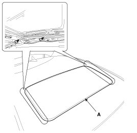
2. Installation is the reverse of removal.
Motor Replacement
1. Remove the roof trim.
NOTE:
- Confirm the position of guide whether it is closed or not when you remove the motor.
2. Disconnect the motor connector (B), remove the screws and then remove the motor (A).
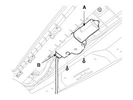
3. Installation is the reverse of removal.
CAUTION:
- Make sure to initialize the motor.
Deflector Replacement
1. Open the glass fully.
2. Loosen the mounting screw (C), from the frame (B), and then remove the deflector (A).
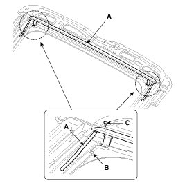
3. Installation is the reverse of removal.
Sunroof Assembly Replacement
1. Remove the follows parts.
A. Interior trim
B. Roof trim
C. Sunroof glass.
2. Disconnect the drain tubes (B).
3. After loosening the mounding nuts, remove the sunroof assembly (A).
Tightening torque:
19.6 - 29.4 N.m (2.0 - 3.0 kgf.m, 14.5 - 21.7 lb-ft)
CAUTION:
- Take care not to scratch the interior trims and other parts.
4. Installation is the reverse of removal.
CAUTION:
- Make sure to initialize the motor.
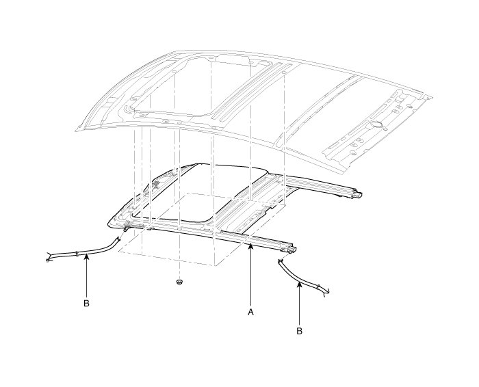
Sunshade Replacement
1. Remove the sunroof assembly.
2. Remove the drip link (A) and sunshade stopper (B).
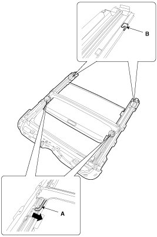
3. Remove the drip rail (A) from the sunroof assembly (B).
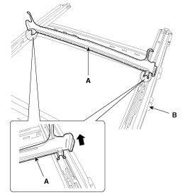
4. Installation is the reverse of removal.
Guide Assembly Replacement
1. Remove the sunroof assembly.
2. Remove a mechanism assembly (A) after lowering a guide thoroughly by pushing a slide to rear.
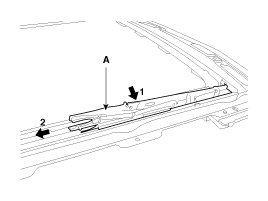
3. Remove the guide (A) and slide (B).
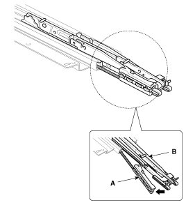
4. Installation is the reverse of removal.
CAUTION:
- Make sure to align the slide with the center of "(A)" and "(B)"
- Make sure to initialize the motor.
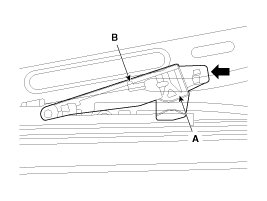
Adjustment
How To Initialize
1. Check that the glass has been installed.
A. Finished height adjustment.
2. Push the close switch. (Keep on pushing the switch)
A. Press and hold the CLOSE button for more than 10 seconds until the sunroof moves up to the tilt position.
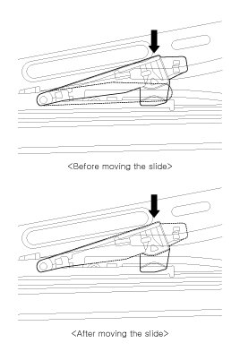
3. Release the sunroof CLOSE button with in 3 seconds. And then press and hold the CLOSE button once again within 3 seconds until the sunroof do as follows;
A. Tilt up -> Slide Open -> Slide Close
4. Then release the lever.
5. When the sunroof is closed completely, turn OFF the UP switch initialize the motor completely.
When To Initialize The Motor
1. After initial vehicle assembly.
2. If the initial value is erased or damaged because of short power electric discharge during operation.
3. After using the manual handle.
Operating The Sunroof Emergency Handle
1. Use the sunroof emergency handle to close or open the sunroof manually if the sunroof cannot be closed electronically due to motor or controller electrical malfunction.
2. Operating method.
A. Remove the roof trim.
B. Push the emergency handle up into the hexagonal drive (A) of the sunroof motor. You must push hard enough to disengage the motor clutch; otherwise the emergency handle will slip due to incomplete fit in the motor.
C. Carefully turn the emergency handle clockwise to close the sunroof.
D. After closing the sunroof, wiggle the handle back and forth as you remove the tool from the motor, to ensure the motor clutch reengages.
E. A 5mm hex socket may be used in place of the emergency handle, with a" Speeder" type handle.
CAUTION:
- Do not use power tools to operate the sunroof.
- Damage to the components may occur.
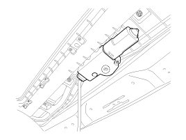